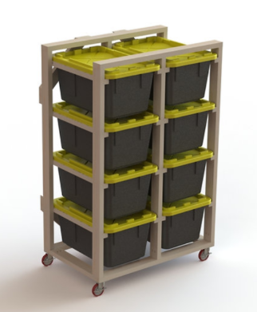
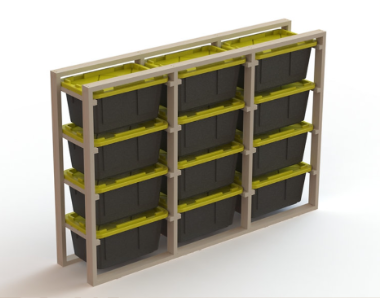
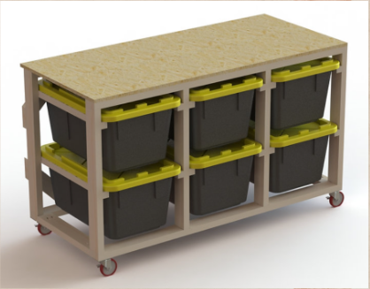

Locked-in rigidity
Cross-braced backs and welded or bolted corners—no wobble when you slide a full tote.
Prototype storefront
Rigid frames, level tiers, and room for standard totes—so your garage, shop, or studio stays sorted without fighting sagging wire racks.

Designed for makers, contractors, and anyone tired of collapsing stacks.
Tote shelves should feel permanent. We overbuild the joints, keep the footprint honest, and leave cable pass-throughs where you actually need them.

Cross-braced backs and welded or bolted corners—no wobble when you slide a full tote.
Tier heights match common 27–32 qt and 50–64 qt footprints so bins seat flush, not perched.

Powder coat or sealed hardwood shelves—spills wipe clean, dust doesn’t cling to raw MDF.
Starting lineup for the prototype. Final dimensions and SKUs will ship with photography.
Vertical footprint for tight wall bays next to workbenches.
From $TBD
The daily driver—enough rows for seasonal gear and tools.
From $TBD
Stable base under windows or pegboard; great for heavy bins.
From $TBD
Meet the builder
Founder · Palubuilt
[Write a short intro here: where you’re based, why you started building tote shelves, and what you want customers to feel when the unit shows up in their garage.]
[Add a second paragraph about how you build (hand tools vs CNC, local lumber, lead times, etc.), or what you do when you’re not in the shop.]
[Optional: warranty mindset, delivery area, or how to reach you for custom sizes.]
Reach out by phone or Instagram for questions, quotes, and custom sizing.